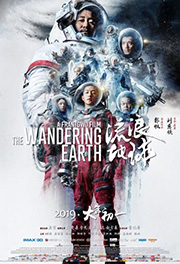
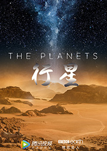
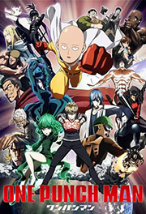
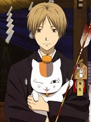
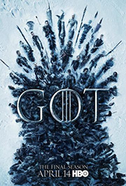

电影 more>
简介：上市企业董事长秘书叶蓝秋（高圆圆 饰）在获知自己罹患癌症之后，心灰意冷的她上了一辆公交车，沉浸在惊愕与恐惧的她，拒绝给车上的老大爷让座，引起众议，这一过程被电视台实习记者杨佳琪（王珞丹 饰）用手机拍个正着。佳琪将公车上的新闻火速交给准嫂子陈若兮（姚晨 饰），凭着新闻主编的敏锐嗅觉，若兮将此新闻恶意放大，从而引发了一场社会大搜索，集体讨伐叶蓝秋的道德沦丧。在公众指责和病魔降临的夹缝中，叶蓝秋带着老板沈流舒（王学圻 饰）借给她的100万，彻底玩起了消失。岂料这更使她被冠以“小三”之名。若兮的摄影师男友无意中被卷入叶蓝秋的世界中，为了获得一笔高额报酬，他受雇陪伴在叶左右。而他却不曾想到，这竟是这个饱受指责的女人生命中最后一段时光。叶蓝秋的自杀，彻底颠覆了陈若兮的爱情与生活，也让所有人开始反思......
（本片根据刘慈欣的同名小说改编）简介：近未来，科学家们发现太阳急速衰老膨胀，短时间内包括地球在内的整个太阳系都将被太阳所吞没。为了自救，人类提出一个名为“流浪地球”的大胆计划，即倾全球之力在地球表面建造上万座发动机和转向发动机，推动地球离开太阳系，用2500年的时间奔往另外一个栖息之地。中国航天员刘培强（吴京 饰）在儿子刘启四岁那年前往国际空间站，和国际同侪肩负起领航者的重任。转眼刘启（屈楚萧 饰）长大，他带着妹妹朵朵（赵今麦 饰）偷偷跑到地表，偷开外公韩子昂（吴孟达 饰）的运输车，结果不仅遭到逮捕，还遭遇了全球发动机停摆的事件。为了修好发动机，阻止地球坠入木星，全球开始展开饱和式营救，连刘启他们的车也被强征加入。在与时间赛跑的过程中，无数的人前仆后继，奋不顾身，只为延续百代子孙生存的希望……
简介：当我还只是十三岁时，1941年春末的那一天，我初次见到了她那一天，墨索里尼向英法宣战，而我，得到了生命里的第一辆脚踏车。 她，撩著波浪状黑亮的秀发，穿著最时髦的短裙和丝袜，踏著充满情欲诱惑的高跟鞋，来到了西西里岛上宁静的阳光小镇。她的一举一动都引人瞩目、勾人遐想，她的一颦一笑都教男人心醉、女人羡妒。玛莲娜，像个女神一般，征服了这个海滨的天堂乐园。 年仅十三岁的雷纳多也不由自主地掉进了玛莲娜所掀起的漩涡之中，他不仅跟著其他年纪较大的青少年们一起骑著单车，穿梭在小镇的各个角落，搜寻著玛莲娜的诱人丰姿与万种风情，还悄悄地成为她不知情的小跟班，如影随形地跟监、窥视她的生活。她摇曳的倩影、她聆听的音乐、她贴身的衣物都成为这个被荷尔蒙淹没的少年，最真实、最美好的情欲幻想。 然而，透过雷纳多的眼，我们也看到了玛莲娜掉进了越来越黑暗的处境之中，她变成了寡妇，而在镇民眼中......
纪录片 more>
简介：日本和歌山县太地，是一个景色优美的小渔村，然而这里却常年上演着惨无人道的一幕。每年，数以万计的海豚经过这片海域，他们的旅程却在太地戛然而止。渔民们将海豚驱赶到靠近岸边的一个地方，来自世界各地的海豚训练师挑选合适的对象，剩下的大批海豚则被渔民毫无理由地赶尽杀绝。这些屠杀，这些罪行，因为种种利益而被政府和相关组织所隐瞒。 理查德•贝瑞（Richard O’Barry）年轻时曾是一名海豚训练师，他所参与拍摄电影《海豚的故事》备受欢迎。但是，一头海豚的死让理查德的心灵受到强烈的震撼。从此，他致力于拯救海豚的活动。不顾当地政府和村民百般阻挠，他和他的摄影团队想方设法潜入太地的海豚屠杀场，只为将罪行公之于众，拯救人类可爱的朋友……
简介：春耕、夏耘、秋收、冬藏，天人合一的东方哲学让中国饮食依时而变，智慧灵动，中医营养摄生学说创造了食材运用的新天地，儒家人伦道德则把心意和家的味道端上我们的餐桌。淘洗历史，糅合时光，一代又一代的中国人在天地间升起烟火，用至精至诚的心意烹制食物，一餐一食之间，中国人展示个性，确认归属，构建文明，理解和把握着世界的奥妙。中国饮食生长于传统文化的沃土，在宽广的时空中，以感恩之心去领悟食物给予我们珍贵的滋养，《舌尖上的中国》第三季继续近观饮食之美，远眺中华文化的魂魄。
简介：BBC年度科学巨制，突破性的视觉特效、最新的科学发现， 《行星》（The Planets）将你带至活力四射的行星表面，见证高度戏剧性的时刻，讲述八大行星的前世今生，揭开太阳系的秘密。太阳系共有8个行星，它们以意想不到的方式影响着我们的生活，同时行星们也有生命。在暴力中诞生，行星发展成为了有生命和有呼吸的世界，在遥远的未来，它们将一个一个地消失。
动漫 more>
简介：有个男人他拥有世界上一切财富、名望和权势，他就是「海贼王」哥路德•罗杰。在临死前说过这样一句话：让全世界的人都奔向大海「想要我的财宝吗？想要的话全就拿去吧……！你们去找吧！我把世界上的一切都放在那里了」。后来世界上的人们将这个宝藏称作“一个大秘宝”（One Piece），许多人为了争夺大秘宝One Piece，无数海贼扬起旗帜，互相斗争，后来就形成了「大海贼时代」。主角蒙奇•D•路飞在遥远的路途上找寻着志同道合的伙伴，携手共进「伟大航线」，目标当上「海贼王」。海贼王是一个依着彼此坚毅的友情最终获得胜利，大伙一起朝着梦想扬帆努力的冒险故事。
简介：主人公埼玉原本是一名整日奔波于求职的普通人。3年前的一天偶然遇到了要对淘气少年下杀手的异变螃蟹人后，回忆起年少年时“想要成为英雄”的梦想，最终拼尽全力救下了淘气少年。重拾对于成为英雄的兴趣之后，通过拼命锻炼，埼玉终于脱胎换骨获得了最强的力量，但同时失去了头发变成了光头， 似乎还失去了某些感情…… 在独自做了一段时间英雄后，与弟子杰诺斯一起，正式加入英雄协会，与众多英雄一起开始了对抗各种怪人以及灾难的生活，不过经常是在无人知晓的情况下做英雄的工作……
简介：夏目贵志生来拥有强大的灵力，能感知平常人所无法接触的妖怪神明的存在。因父母双亡，他多年间辗转于互相推卸责任的亲戚之间，又受到同龄人的欺负，未曾与任何人深交，造成性格一定程度上的孤僻。夏目本性和善，对于自己经历的不幸，无论人类还是妖怪都未曾怨恨过，后被善良的藤原夫妇收养。一次被妖怪追赶时，夏目打破了一只强大妖怪“斑”的封印，继而牵涉到自己祖母的遗物“友人帐”——一本记录着众多妖怪名字的契约书。对友人帐产生兴趣的“斑”与夏目定下约定，自己作为保镖保护其一生，以交换友人帐的所有权，平日则化身成招财猫模样的“猫咪老师”。在猫咪老师的陪伴以及小镇周遭和谐氛围的关怀下，夏目贵志经历过一个个奇异、悲伤、怀念、令人感动的怪诞故事......
电视剧 more>
简介：raig Mazin执笔﹑Johan Renck执导的HBO/Sky合拍5集迷你剧《切尔诺贝利 Chernobyl》顾名思义就是那宗闻名的人为灾难事件，背景在1986年的乌克兰，剧中将会描述当时究竟发生了甚么引致这事故，而且当年勇敢的众人是如何牺牲自己拯救处于灾难中的欧洲。Stellan Skarsgård饰演苏联部长会议副主席﹑苏联能源局领导Boris Shcherbina，他在事故发生数小时后被指派领导政府委员会，但当时政府还没意识到反应堆已经爆炸；作为这史无前例人为灾难的高级应对官员，他发现自己身陷政治体系问题，以及得面对这场核灾难不停攀升的伤亡人数。Emily Watson饰演苏联核物理学家Ulana Khomyuk，她致力调查切尔诺贝利的真相，好使未来不会再发生同类事件。但调查期间令她与想埋葬可怕秘密的人造成冲突，为了真相她得冒着失去自由，甚至生命的危险。Jared Harris饰演苏联科学家Valery Legasov，被克里姆林宫指派调查该事故。
简介：重返临冬城的琼恩·雪诺（基特·哈灵顿 Kit Harington 饰）在布兰·史塔克（伊萨克·亨普斯特德-怀特 Isaac Hempstead-Wright 饰）口中得知了自己身世的秘密，让他与丹妮莉丝·塔格利安（艾米莉亚·克拉克 Emilia Clarke 饰）的关系蒙上了一层冰霜。 詹姆·兰尼斯特（尼古拉·科斯特-瓦尔道 Nikolaj Coster-Waldau 饰）试图召集河间地驻军北伐异鬼，却发现艾德慕·徒利（托比亚斯·门基斯 Tobias Menzies 饰）已经包围你了奔流城。 攸伦·葛雷乔伊（皮鲁·埃斯贝克 Pilou Asbæ 饰）将黄金团带至君临获取了瑟曦（琳娜·海蒂 Lena Headey 饰）的信任，而实际上，他已经与无面者贾昆·赫加尔…
简介：“学渣”耿耿中考意外走了狗屎运进入振华高中，入学那天遇见了“学霸”余淮，他们在偶然的机会下相识又成了同桌。进入振华后的生活就如耿耿预期的一样危机重重：高强度的魔鬼军训、摸底考试的沉重打击、上课听不懂、作业做不完……回到家，突然出现的新妈妈齐阿姨和新弟弟也让耿耿一时无法接受。但因为同桌的余淮，一切都变得不同。耿耿和β（蒋年年）、简单成了闺蜜，下课组团一起去厕所，吃饭时一起讨论八卦和暗恋的秘密。除了他们还交到了一群好朋友，有了朋友们的陪伴，让耿耿的高中生活不再孤单。然而高考之后，余淮却消失了——
综艺 more>

简介：奇葩说第二季》于2015年6月26日开播，每周五、周六晚在爱奇艺独家播出，由马东主持，金星和蔡康永担任常驻导师，大S、高晓松等将担任嘉宾“女神”。
简介：《吐槽大会》是一档喜剧类脱口秀，每一集邀请一位阅历丰富、三观正确的名人作为“被吐槽”的主嘉宾，由这位名人邀请一群自己的圈中好友跨界表演，挑战吐槽式喜剧脱口秀。节目本质是一场以脱口秀为表演形式的大型喜剧演出，通过嘉宾和嘉宾之间的调侃，在嬉笑怒骂、哈哈大笑中传递正确的三观。